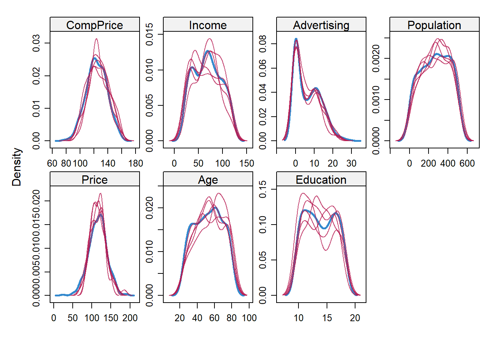
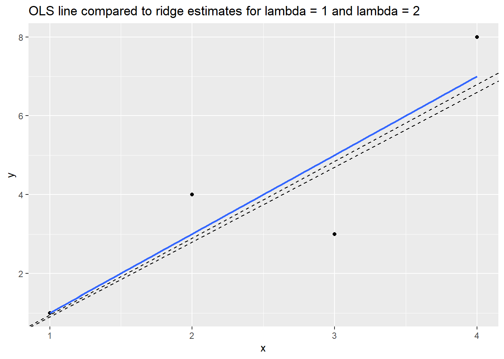

3 Model Fitting
This chapter covers a range of additional topics related to model fitting, such as variable selection, model comparison, cross-validation and missing data imputation. It culminates with a discussion of ridge and LASSO regression, two useful regression-based machine learning techniques for automatically selecting variables in high dimensional data so as to balance the bias-variance trade-off. The concepts and methods discussed here apply to both linear and logistic regression.
Additional resource:
- Introduction to Statistical Learning. See chapters 5 and 6.
3.1 Getting started
Before starting showing how to perform data modelling in the context of linear regression (NOTE: everything applies to logistic regression), let us start by implementing some functions that will be required to evaluate model performance.
A multivariate linear model with an outcome, \(y\), and \(p\) predictors \(x\) can be written as:
\[ y_i = \beta_0 + \beta_1x_i + \epsilon_i, \] where \(i = 1, \ldots, n.\)
The subscript in this equation, \(i\), indexes the \(n\) observations in the dataset. (Think of \(i\) as a row number.) The equation can be read as follows: the value of \(i^{th}\) outcome variable, \(y_i\), is defined by an intercept, \(\beta_0\), plus a slope, \(\beta_1\), multiplied by the \(i^{th}\) predictor variable, \(x_i\). These elements define the systematic or deterministic portion of the model. However, because the world is uncertain, containing randomness, we know that the model will be wrong (as George Box said). To fully describe the data we need an error term, \(\epsilon_i\), which is also indexed by row. The error term is the stochastic portion of the model. \(\epsilon_i\) measures the distance between the fitted or expected values of the model—calculated from the deterministic portion of the model—and the actual values. The errors in a linear model—also known as model residuals—are the part of the data that remains unexplained by the deterministic portion of the model. One of the key assumptions of a linear model is that the residuals are normally distributed with mean = 0 and variance = \(\sigma^2\), which we denote, in matrix notation, as \(N(0,\sigma^2)\).
The model performance can be summarized with
\[ \operatorname{RSS} = \sum_{i=1}^n ((\beta_0 + \beta_1x_i) - y_i)^2 = \sum_{i=1}^n (\hat{y}_i - y_i)^2 \]
A related measure is root mean squared error (RMSE), the square root of the average of the squared errors:
\[ \operatorname{RMSE}= \sqrt{\frac{\sum_{i=1}^n ((\beta_0 + \beta_1x_i) - y_i)^2}{n}} \]
\[ = \sqrt{\frac{\sum_{i=1}^n (\hat{y}_i - y_i)^2}{n}} \]
The nice thing about RMSE is that, unlike RSS, it returns a value that is on the scale of the outcome.
\(R^2\) is another measure of model fit that is convenient because it is a standardized measure—scaled between 0 and 1—and is therefore comparable across contexts.
\[ R^2 = 1 - \frac{SS_\text{resid}}{SS_\text{tot}}, \] where \(SS_\text{tot}=\sum_i (y_i-\bar{y})^2\) and \(SS_\text{res}=\sum_i (y_i - \hat{y}_i)^2\). In words: \(R^2\) represents the variation in the outcome variable explained by the model as a proportion of the total variation. In the plot below, the left hand panel, TSS, serves as the denominator in calculating \(R^2\), and the right hand panel, RSS, is the numerator.
Next R code illustrates how to implement such measurements and one example with Hitters dataset which contains information of the performance statistics and salaries of major league baseball players in the 1986 season. It includes information about Salary, which is our outcome, and some predictor: hits, years in the league, home runs, RBIs, walks and assists.
library(ISLR)
data(Hitters)
rss <- function(fitted, actual){
sum((fitted - actual)^2)
}
rmse <- function(fitted, actual){
sqrt(mean((fitted - actual)^2))
}
R2 <- function(fitted, actual){
tss <- sum((actual - mean(actual))^2)
rss <- sum((actual - fitted)^2)
1 - rss/tss
}
display(h <- lm(Salary ~ Hits, data= Hitters))## lm(formula = Salary ~ Hits, data = Hitters)
## coef.est coef.se
## (Intercept) 63.05 64.98
## Hits 4.39 0.56
## ---
## n = 263, k = 2
## residual sd = 406.17, R-Squared = 0.19## [1] 43058621## [1] 404.6245## [1] 0.19243553.2 General rules for variable selection
How do we know which variables belong in a model? The short answer is: we often don’t. Here are some rules of thumb when thinking about variable selection:1
Think about the data. What variables does it make sense to include given the situation? Does any published literature offer guidance? If we are in descriptive mode then we may only care about certain variables and use the others as controls. If we are in predictive mode then we include all variables that, for substantive reasons, might be important in predicting the outcome. This is very general guidance, however, as different contexts demand different approaches to model fitting.
Include quadratic terms if there is evidence from bivariate plots of a non-linear relationship between predictor and outcome. In general, we don’t include polynomial terms with degrees greater than 2. To do so risks overfitting.
Look for possible interactions among variables with the largest main effects. In general we don’t include higher order interactions (greater than 2) unless we have a sensible rationale and can explain it (to ourselves and to our audience). 2 way interactions are hard enough to explain.
Consider combining separate predictors into a single predictor—a “total score”—by summing or averaging them.
Keep it simple. Parsimonious models are almost always better—they are more interpretable and tend to have lower variance.
3.3 Stepwise variable selection
The traditional technique in statistics for selecting variables is stepwise selection.
With forward selection we start with a null model (intercept only) and add one variable at a time. If the added variable improves the model, then we keep it in and add another. We continue until all variables have been tested. See this figure

Forward selection
With backward selection we start with a full model (all available terms), and serially remove variables. If the model is better after a variable has been removed, then we leave it out. We continue until all variables have been tested. See this figure

Backward selection
Forward selection followed by backward selection. Select forward then backward.
Unfortunately these hand-fitting procedures are flawed. They depend on the order in which variables are added or excluded and often will not select the best model. Furthermore, in the Boston data there are \(k\) = 13 predictor variables, which means there are \(2^k\) or 8192 possible models we could fit, not even including interactions or polynomial terms. This is an extremely large space to search through to find the best model, and the search is computationally expensive and time consuming. Conducting such a search manually would be impossible.
3.4 Comparing models
We are already familiar with \(R^2\), RMSE and RSS as tools for comparing models. In general, if we add a variable and \(R^2\) goes up and RMSE/RSS goes down, then the model with the additional variable is better. The amount of unexplained variance has decreased. However, there is a danger of overfitting. As we’ve seen, adjusted \(R^2\) penalizes the fit for the number of predictors. Likewise, information criterion methods like AIC (Akaike Information Criterion) penalize the fit for model complexity, defined as the number of predictors.
\[\mathrm{AIC} = - 2\ln(L) + 2k\] where \(k\) the number of estimated parameters in the model, \(L\) is the maximized value of the likelihood function for the model, and \(ln\) is the natural log. Given a set of candidate models for the data, the preferred model is the one with the lowest AIC value. In penalizing for larger \(k\) (ensured by the final term, \(+2k\)), AIC attempts to guard against overfitting. It is possible, then, to see \(R^2\) go up with the addition of predictors, while AIC goes down.
We can also compare models with a formal statistic test using the likelihood ratio test (LRT):
\[
2 \times [ \ln(L_{a}) - \ln(L_{c}) ]
\]
where \(\ln(L_{c})\) is the log likelihood of the current model and \(\ln(L_{a})\) is the log likelihood of the alternative model with additional predictors. The lrtest() function in the lmtest package implements the LRT. The anova() function in base R will also compare models using an f-test, with results that will be virtually identical to the LRT.
Here are some examples of model comparison using the Hitters data from the ISLR package. We start with a null model of Salary:
## lm(formula = Salary ~ 1, data = Hitters)
## coef.est coef.se
## (Intercept) 535.93 27.82
## ---
## n = 263, k = 1
## residual sd = 451.12, R-Squared = 0.00## [1] 535.93A null model consists only in an intercept, the coefficient of which, as we can see, is just the mean of Salary. (Note that in order to calculate the mean of Salary we needed to remove the missing values. lm() silently removes the missing values: display() reports \(n = 263\), whereas the dataset has 322 rows.) The key question as we make a model more complex is whether that complexity is justified, whether adding predictors not only lowers the bias but does so without unduly increasing the potential variance. Let’s add predictors.
## lm(formula = Salary ~ Hits, data = Hitters)
## coef.est coef.se
## (Intercept) 63.05 64.98
## Hits 4.39 0.56
## ---
## n = 263, k = 2
## residual sd = 406.17, R-Squared = 0.19## Likelihood ratio test
##
## Model 1: Salary ~ 1
## Model 2: Salary ~ Hits
## #Df LogLik Df Chisq Pr(>Chisq)
## 1 2 -1980.1
## 2 3 -1952.0 1 56.212 6.508e-14 ***
## ---
## Signif. codes: 0 '***' 0.001 '**' 0.01 '*' 0.05 '.' 0.1 ' ' 1## Analysis of Variance Table
##
## Model 1: Salary ~ 1
## Model 2: Salary ~ Hits
## Res.Df RSS Df Sum of Sq F Pr(>F)
## 1 262 53319113
## 2 261 43058621 1 10260491 62.194 8.531e-14 ***
## ---
## Signif. codes: 0 '***' 0.001 '**' 0.01 '*' 0.05 '.' 0.1 ' ' 1## df AIC
## null 2 3964.130
## h1 3 3909.918Hits is statistically significant, since the 95% CI does not include 0 (4.39 \(\pm\) 2 x .56). These three methods agree that the model with Hits is an improvement over the null model. In the case of lrtest() and anova() the p-value represents the results of a statistical test (chi-squared test and f-test, respectively) for whether the second, more complex model is a better fit to the data. Does adding an additional predictor, AtBat, improve the model further?
## lm(formula = Salary ~ Hits + AtBat, data = Hitters)
## coef.est coef.se
## (Intercept) 141.27 76.55
## Hits 8.21 2.08
## AtBat -1.22 0.64
## ---
## n = 263, k = 3
## residual sd = 404.13, R-Squared = 0.20## Likelihood ratio test
##
## Model 1: Salary ~ Hits
## Model 2: Salary ~ Hits + AtBat
## #Df LogLik Df Chisq Pr(>Chisq)
## 1 3 -1952.0
## 2 4 -1950.1 1 3.6588 0.05577 .
## ---
## Signif. codes: 0 '***' 0.001 '**' 0.01 '*' 0.05 '.' 0.1 ' ' 1## Analysis of Variance Table
##
## Model 1: Salary ~ Hits
## Model 2: Salary ~ Hits + AtBat
## Res.Df RSS Df Sum of Sq F Pr(>F)
## 1 261 43058621
## 2 260 42463750 1 594871 3.6423 0.05743 .
## ---
## Signif. codes: 0 '***' 0.001 '**' 0.01 '*' 0.05 '.' 0.1 ' ' 1## df AIC
## h1 3 3909.918
## h2 4 3908.260The results are ambiguous. R-squared goes up, while AIC, log likelihood and RSS go down, but the decline in the latter two cases is not statistically significant. (This result is consistent with the fact that AtBat is not itself statistically significant, since the 95% CI for AtBat includes 0: -1.22 \(pm\) 2 x .64.) Should we leave AtBat in the model? It doesn’t improve the fit much, if at all, while adding complexity. So, we should take it out. Unfortunately such choices are often not clear, which is why model fitting sometimes seems more like an art than a science.
To implement forward selection, we would keep adding variables and comparing models using lrtest() or anova() trying to find the best possible fit. One problem with this procedure, however, is that the order in which we step through predictors will impact our selection decisions because each predictor’s impact on model fit is contingent on the presence of the others. For example, suppose we had added AtBat later in the selection process:
h3 <- lm(Salary ~ Hits + Years + HmRun + RBI + Walks + Assists, data = Hitters)
h4 <- lm(Salary ~ Hits + Years + HmRun + RBI + Walks + Assists + AtBat, data = Hitters)
lrtest(h3, h4)## Likelihood ratio test
##
## Model 1: Salary ~ Hits + Years + HmRun + RBI + Walks + Assists
## Model 2: Salary ~ Hits + Years + HmRun + RBI + Walks + Assists + AtBat
## #Df LogLik Df Chisq Pr(>Chisq)
## 1 8 -1916.7
## 2 9 -1911.1 1 11.114 0.0008569 ***
## ---
## Signif. codes: 0 '***' 0.001 '**' 0.01 '*' 0.05 '.' 0.1 ' ' 1## df AIC
## h3 8 3849.311
## h4 9 3840.198Now AtBat clearly improves the fit, but we would never have discovered that had we already thrown it out. This is troubling. Is there a better way? Perhaps.
3.5 Automatic variable selection
Algorithms have been developed to search model space efficiently for the optimal model. A caution about automatic variable selection is in order at the outset, however. Choosing variables should not be a mechanical process. We should, instead, seek to understand the data generating process. Indeed, the greatest benefit of manual stepwise selection consists less in producing a good model than in the understanding gained by fitting many models, and seeing, through trial and error, which predictors are most reactive with the outcome. Especially when it comes to description, automatic variable selection algorithms are just tools for exploring your data and thinking about models.
The step() function in base R automates stepwise variable selection using AIC.
## lm(formula = Salary ~ AtBat + Hits + HmRun + Runs + RBI + Walks +
## Years + CAtBat + CHits + CHmRun + CRuns + CRBI + CWalks +
## League + Division + PutOuts + Assists + Errors + NewLeague,
## data = Hitters)
## coef.est coef.se
## (Intercept) 163.10 90.78
## AtBat -1.98 0.63
## Hits 7.50 2.38
## HmRun 4.33 6.20
## Runs -2.38 2.98
## RBI -1.04 2.60
## Walks 6.23 1.83
## Years -3.49 12.41
## CAtBat -0.17 0.14
## CHits 0.13 0.67
## CHmRun -0.17 1.62
## CRuns 1.45 0.75
## CRBI 0.81 0.69
## CWalks -0.81 0.33
## LeagueN 62.60 79.26
## DivisionW -116.85 40.37
## PutOuts 0.28 0.08
## Assists 0.37 0.22
## Errors -3.36 4.39
## NewLeagueN -24.76 79.00
## ---
## n = 263, k = 20
## residual sd = 315.58, R-Squared = 0.55Forward selection settled on 19 predictors with model \(R^2\) of .55.
## lm(formula = Salary ~ AtBat + Hits + Walks + CAtBat + CRuns +
## CRBI + CWalks + Division + PutOuts + Assists, data = Hitters)
## coef.est coef.se
## (Intercept) 162.54 66.91
## AtBat -2.17 0.54
## Hits 6.92 1.65
## Walks 5.77 1.58
## CAtBat -0.13 0.06
## CRuns 1.41 0.39
## CRBI 0.77 0.21
## CWalks -0.83 0.26
## DivisionW -112.38 39.21
## PutOuts 0.30 0.07
## Assists 0.28 0.16
## ---
## n = 263, k = 11
## residual sd = 311.81, R-Squared = 0.54Backward selection settled on 10 predictors with \(R^2\) of .54. (The default setting in step() for direction is “both,” which returns the same result as the above.) This function certainly simplifies stepwise variable selection, but even the automated stepwise algorithm is not guaranteed to return the optimal model, as the result still depends on the sequence in which variables are entered into the model. Moreover, the fact that backward selection returned such a different model is concerning. Ideally, we do not want our model to depend on a methodological choice—we just want the best model. And in this case, while the larger model has a marginally higher \(R^2\), it is also much more complicated: does the better fit justify the additional complication? Probably not. With the bigger model we have likely crossed the line into overfitting, an issue we will take up when we discuss cross-validation.
The regsubsets() function in the leaps package performs exhaustive search of the model space using the leaps algorithm for variable selection.

The plot presents multiple candidate models organized by BIC on the y-axis. Like AIC, BIC penalizes for model complexity.2 Lower BIC is better. The model with the lowest BIC is the rather simple one at the top of the plot: Intercept, AtBat, Hits, Walks, CRBI, DivisionW and PutOuts. If we refit a model with these predictors using lm() we find it has an \(R^2\) of .51.
Is this model really better? The algorithm did an exhaustive search of the model space yet returned a model with lower \(R^2\)! How could that be better? But it probably is better. While the bias in this model will be higher than in the larger model selected by the step() function, the variance is likely lower. Remember: bias refers to in-sample model performance and variance refers to the out-of-sample model performance—how the model does when it encounters new data. If the model performs poorly on new data, with a big discrepancy between in-sample and out-of-sample performance, then it is overfitting. AIC, BIC, and adjusted R-squared all penalize for model complexity in order to avoid overfitting and will tend to select models with higher bias and lower variance.
3.6 Cross validation
Cross validation (CV) is the technique we use to assess whether a model is overfitting and to estimate how it will perform on new data.
Overfitting is a major hazard in predictive analytics, especially when using machine learning algorithms like random forest which, without proper tuning, can learn sample data almost perfectly, essentially fitting noise. When such a model is used to predict new data, with different noise, model performance can be shockingly bad. We use CV to help us identify and avoid such situations. How so? Many machine learning algorithms require the user to specify certain parameters. In the case of random forest, for example, we need to specify values for \(m\), the number of randomly chosen predictors to be used at each tree split. The lower the \(m\), the simpler the tree. We can use CV to choose the value of \(m\) that minimizes variance and reduces overfitting. Linear regression has no user-specified parameters, but CV still helps us assess how much a model might be overfitting the sample data.
The simplest version of CV is the so-called validation set method, consisting in the following steps:
- Split the sample data into two parts: a train set and a test set. Researchers use different proportions, but it is common to randomly select 70% of the data as the train set and 30% as the test or validation set. (Obviously, we must have enough data in the sample to fit a model after splitting the data.) Because CV relies on random sampling, our results will vary unless we use
set.seed(). We will demonstrate using the Hitters data, using only complete cases.
set.seed(123)
Hitters_complete <- Hitters[complete.cases(Hitters), ]
rows <- sample(nrow(Hitters_complete), .7 * nrow(Hitters_complete))
train <- Hitters_complete[rows, ]
test <- Hitters_complete[-rows, ]- Fit a model on the training set using an appropriate variable selection procedure. We will create two models for comparison: one with all the variables, then one with just the variables chosen by
regsubsets().
full_model <- lm(Salary ~., data = train)
select_model <- lm(Salary ~ AtBat + Hits + Walks + CRBI + Division + PutOuts, data = train)- Use that model to predict on the testing set. Performance on the test set is the CV estimate for the model’s out-of-sample performance.
results <- data.frame(Model = c("Full model in-sample",
"Select model in-sample",
"Full model out-of-sample",
"Select model out-of-sample"),
RMSE = round(c(rmse(fitted(full_model), train$Salary),
rmse(fitted(select_model), train$Salary),
rmse(predict(full_model, newdata = test), test$Salary),
rmse(predict(select_model, newdata = test), test$Salary)),1))
results## Model RMSE
## 1 Full model in-sample 297.8
## 2 Select model in-sample 326.1
## 3 Full model out-of-sample 368.2
## 4 Select model out-of-sample 306.4We can see that the full model is overfitting—in-sample RMSE is worse than out-of-sample RMSE—while the select model chosen by regsubsets() using BIC is not overfitting. In fact, the select model actually does better out-of-sample than in-sample, though this particular result is likely a matter of chance, a function of random split we happen to be using. Generally, though, these results illustrate the danger of model complexity, and why it makes sense to choose predictors using measures of model fit that penalize for complexity. Simple models tend to generalize better. This figure depicts these relationships:

As model complexity increases, the in-sample fit will likely keep getting better and better. But the out-of-sample fit starts getting worse at a certain threshold of complexity, as the model begins fitting noise in the sample. CV is designed to identify that threshold.
3.7 Cross-validation and Bootstrap
The problem with this train-test CV procedure is that results can be quite variable due to the single random split defining the two sets. \(K\)-fold CV is designed to solve this problem. From Statistical Learning:
This approach involves randomly dividing the set of observations into \(k\) groups, or folds, of approximately equal size. The first fold is treated as a validation set, and the method is fit on the remaining \(k − 1\) folds. The mean squared error, \(MSE_1\),is then computed on the observations in the held-out fold. This procedure is repeated \(k\) times; each time, a different group of observations is treated as a validation set. This process results in \(k\) estimates of the test error, \(MSE_1,MSE_2,...,MSE_k\). The \(k-fold\) CV estimate is computed by averaging these values: \(CV_k = \sum_{i=1}^{k}MSE_i.\)(181)
There are different types of CV that we briefly describe here.
3.7.1 Leave-one-out cross validation (LOOCV)
This method works as follows:
- Extract one observation from the data and use the rest to train the model
- Tests the model with the observation that has been extracted in the previous step and save the error associated with that prediction
- Repeat the process for all observations
- Calculate the global prediction error using the average of all the errors estimated in step 2.
We will see later how to do these calculations with a specific library. For now, for you to learn how this methodology works, you must perform the following exercise
| EXERCISE (Deliver at Moodle: Exercise-LOOCV): Upload the R function. |
Create an R function that performs the LOOCV procedure and estimates the LOOCV value for the full model (e.g object full_model) and the selected model (e.g. object select_model) in the train data. |
HINT: use the function update () to re-evaluate the model in a new dataset. |
3.7.2 K-fold cross validation (K-fold CV)
The difference with LOOCV is that this method evaluates the behavior of the model in a data set of different size (K). The algorithm is as follows:
- Separate the data into k-subsets (k-fold) randomly
- Save one of the subsets of data and train the model with the rest of the individuals
- Tests the model with the reserved data and saves the average prediction error.
- Repeat the process until the k subsets have served as test sample.
- Calculate the average of the k errors that have been saved. This value is the cross-validation error and it helps us to evaluate the behavior of our model as if we were using it in an external database.
The main advantage of this method over LOOCV is the computational cost. Another advantage that is not so obvious is that this method often gives better estimates of model error than LOOCV.
A typical question is how to choose the optimal value of K. Small values of K give biased estimates. On the other hand, large K values are less skewed, but have a lot of variability. In practice, values of k = 5 or k = 10 are normally used, since these values have, empirically, estimated error rates that are not too biased or with too much variance.
As in the previous case, we will see an R package to perform these analyzes efficiently. For now, do the following exercise:
| EXERECISE (Deliver at Moodle: Exercise-Kfold): Upload the R function. |
Create an R function that performs the K-fold CV procedure and estimates the value of value K-fold CV for the full model (e.g object full_model) and the selected model (e.g. object select_model) in the train data. The function should have a parameter that depends on K. Give the results for K = 5 and K = 10. |
HINT: use the function update () to re-evaluate the model in a new dataset. |
3.7.3 Bootstrap
Instead of dividing our sample into \(K\) sub-samples we can carry out a random selection of samples with replacement. These re-samples are called bootstrap tambples. This is a technique widely used in statistics to make inference when the distribution of the statistic is unknown. This will be further explained in the next letures, but here you have a simple description of this methodoloty.

Boostrap

Boostrap
The bootstrap procedure applied to regression would be:
- Draw a random sample with replacement of size $ n $ from our data (we have $ n $ observations)
- Save samples that have not been selected (test data)
- Train the model with the sample * bootstrap *
- Tests the model with the test data and saves the average prediction error.
- Repeat the process $ B $ times
- Calculate the average of the $ B $ errors that have been saved. This value is the * bootstrap * error and it helps us to evaluate the behavior of our model.
| EXERCISE (Deliver at Moodle: Exercise-bootstrap): Upload the R function. |
Create a function R that implements the bootstrap procedure and estimate the value of this method for the full model (e.g object full_model) and the selected model (e.g. object select_model) in the train data. The function should have a parameter that depends on \(B\). Provide the the results for B = 25, B = 50, and B = 100. |
HINT: use the function update () to re-evaluate the model in a new dataset. |
3.8 Example with caret library
The caret R package (short for Classification And REgression Training) contains functions to streamline the model training process for complex regression and classification problems. Here there is an excellent bookdown describing how to do machine learning with R using different methods.
By default caret uses 25 bootstrap samples rather than folds to perform model evaluation. Some data points will be left out of each bootstrap sample; caret uses those as the test set for estimating out-of-sample predictive error.
## Linear Regression
##
## 184 samples
## 19 predictor
##
## No pre-processing
## Resampling: Bootstrapped (25 reps)
## Summary of sample sizes: 184, 184, 184, 184, 184, 184, ...
## Resampling results:
##
## RMSE Rsquared MAE
## 365.7867 0.4751905 261.7278
##
## Tuning parameter 'intercept' was held constant at a value of TRUEThe output that caret prints to the screen is not in-sample RMSE and \(R^2\) but is rather the CV estimate of out-of-sample error. Estimated out-of-sample RMSE for the full model is 391.19. Let’s compare this result to the one for the select model.
set.seed(123)
train(Salary ~ AtBat + Hits + Walks + CRBI + Division + PutOuts,
data = train,
method = "lm")## Linear Regression
##
## 184 samples
## 6 predictor
##
## No pre-processing
## Resampling: Bootstrapped (25 reps)
## Summary of sample sizes: 184, 184, 184, 184, 184, 184, ...
## Resampling results:
##
## RMSE Rsquared MAE
## 349.7814 0.5100381 246.7548
##
## Tuning parameter 'intercept' was held constant at a value of TRUEEstimated out-of-sample RMSE for the select model is 362.17, which roughly agrees with the result we obtained using the validation set method: the simpler model has lower variance. And why do we care about lower variance? Because models that perform better on new data are less yoked to the idiosyncrasies of sample data and presumably doing a better job of describing the characteristics of the population. Such models are better at both inference and prediction.
3.9 Missing data imputation
Real-world datasets often have missing observations. The lm() function, for better or worse, silently removes rows with missing observations. Should we remove these rows or impute the missing observations? We are almost always better off imputing.3 While we can choose whether to impute in the case of linear regression, many machine learning applications require complete datasets: so we must impute. Missing data imputation is a large and complicated topic; the following discussion is very introductory.
Types of missing values:
Missing completely at random (MCAR): the probability that an observation is missing is the same for all cases. Deleting missing cases in this instance will not cause bias, though we may lose information.
Missing at random (MAR): the probability that an observation is missing depends on a known mechanism. For example, some groups are less likely to answer surveys. If we know group membership we can delete the missing observations provided we include group as a factor in a regression. However, we can generally do better than just deleting such cases.
Missing not at random (MNAR): the probability that an observation is missing depends on some unknown mechanism—an unobserved variable. Dealing with MNAR problems is difficult or even impossible.
In this discussion we we will focus on MAR problems. A simple solution is to fill in or impute the MAR values. There are two major strategies:
Single imputation replaces missing values based on a univariate statistic or a multivariable regression model. The caret package will do single imputation with medians, KNN regression or random forest. The missForest package will do single imputation using random forest. In single imputation using medians we impute missing data using the median of the univariate column vector. (The median is better than the mean when the column data are skewed.) In single imputation using KNN or random forest we create a multivariable model of the missing observations using the other column vectors and use that model to predict the missing values.
The problem with single imputation, theoretically, is that the variability of the imputed variable is lower than the variability in the actual variable would have been, creating a bias towards 0 in the coefficients. Thus, while deletion loses information, single imputation can cause bias. (It is not clear to me, however, how big a problem this actually is in practice.)
Multiple imputation addresses these problems by imputing missing values with a multivariable model but adding the variability back in by re-including the error variation that we would normally see in the data. The “multiple” in multiple imputation refers to the multiple datasets created in the process of estimating regression coefficients. The steps are as follows:
- Create \(m\) complete datasets with imputed missing values. Imputations are done by randomly drawing from distributions of plausible values for each column vector.
- Fit a linear model on each imputed dataset,and store \(\hat\beta\)s and SEs.
- Average the \(\hat\beta\)s and combine the SEs to produce coefficients based on multiply imputed datasets.4
Multiple imputation works better for description than for prediction, and is probably preferrable to single imputation if we only want to estimate coefficients. For prediction it will usually be necessary to use single imputation.
We will demonstrate imputation methods using the Carseats data from the ISLR package. This is a simulated dataset of carseat sales, from which we will randomly remove 25% of the observations using the prodNA() function in the missForest package (taking care to leave the outcome variable, Sales, intact).
data(Carseats)
levels(Carseats$ShelveLoc) <- c("Bad","Medium","Good") # Relevel the factor
library(missForest)
set.seed(123)
carseats_missx <- prodNA(Carseats[,-1], noNA=.25)
carseats_miss <- cbind(Sales=Carseats[, 1], carseats_missx)
glimpse(carseats_miss)## Rows: 400
## Columns: 11
## $ Sales <dbl> 9.50, 11.22, 10.06, 7.40, 4.15, 10.81, 6.63, 11.85, 6.54, 4.69, 9.01, 11.96, 3.98, 10.96, 11.17, 8.71, ...
## $ CompPrice <dbl> 138, 111, 113, 117, 141, 124, 115, NA, NA, NA, 121, 117, NA, 115, 107, NA, 118, NA, 110, 129, 125, 134,...
## $ Income <dbl> 73, 48, 35, 100, 64, 113, NA, 81, 110, 113, 78, 94, NA, 28, 117, 95, 32, 74, 110, 76, NA, NA, 46, NA, 1...
## $ Advertising <dbl> 11, 16, NA, 4, 3, 13, NA, 15, 0, 0, 9, 4, 2, NA, 11, 5, NA, 13, 0, 16, 2, 12, 6, 0, 16, 0, 11, 0, NA, 1...
## $ Population <dbl> 276, 260, 269, NA, 340, 501, 45, 425, 108, 131, 150, 503, NA, 29, 148, 400, 284, 251, 408, 58, 367, 239...
## $ Price <dbl> 120, NA, NA, 97, 128, 72, 108, 120, NA, 124, 100, NA, NA, NA, 118, 144, 110, 131, 68, 121, NA, 109, 138...
## $ ShelveLoc <fct> Bad, NA, Good, NA, Bad, Bad, Good, NA, Good, Good, Bad, Medium, NA, Medium, Medium, Good, Medium, Mediu...
## $ Age <dbl> 42, 65, NA, 55, 38, NA, 71, 67, 76, 76, 26, 50, NA, 53, 52, 76, 63, 52, 46, 69, NA, NA, NA, 79, 42, 54,...
## $ Education <dbl> NA, 10, 12, NA, 13, 16, 15, 10, 10, 17, 10, 13, NA, NA, NA, 18, 13, 10, 17, 12, 18, NA, NA, NA, 12, 11,...
## $ Urban <fct> NA, Yes, Yes, Yes, Yes, NA, NA, Yes, No, NA, NA, Yes, Yes, Yes, Yes, No, Yes, Yes, No, NA, Yes, No, Yes...
## $ US <fct> Yes, Yes, Yes, Yes, No, Yes, No, Yes, NA, Yes, Yes, Yes, No, Yes, Yes, No, No, NA, Yes, Yes, NA, Yes, N...There are now many missing observations. When we fit a regression model of Sales, notice that lm() silently removes the rows with NAs, producing a model based on a very small subset of the data.
## lm(formula = Sales ~ CompPrice + Income + Advertising + Population +
## Price, data = carseats_miss)
## coef.est coef.se
## (Intercept) 6.24 1.99
## CompPrice 0.10 0.02
## Income 0.01 0.01
## Advertising 0.13 0.03
## Population 0.00 0.00
## Price -0.11 0.01
## ---
## n = 93, k = 6
## residual sd = 2.06, R-Squared = 0.59Out of an original dataset of 400 we now only have 82 rows!
We will demonstrate multiple imputation using the mice() function from the mice package. (mice stands for “multiple imputation using chained equations.”)
## [1] "Sales" "CompPrice" "Income" "Advertising" "Population" "Price" "ShelveLoc" "Age"
## [9] "Education" "Urban" "US"The carseats_imp object created by mice() includes (among many other things) \(m\) imputed datasets (the default setting in mice is m = 5). The imputed datasets differ because the imputations are randomly drawn from distributions of plausible values. We can visualize the variability of the predictors in these imputed datasets using the densityplot() function.

The solid blue lines depict the actual distribution of the predictors, while the red lines show the imputed distributions. The next step is to use these imputed datasets to average the \(\hat\beta\)s and SEs using mice’s pool() function.
mice_model_imp <- with(data = mice_imp,
exp = lm(Sales ~ CompPrice + Income + Advertising + Population + Price))
(mi <- summary(pool(mice_model_imp))[, 2:6])## estimate std.error statistic df p.value
## 1 4.6263624799 1.1624569136 3.9798142 37.55669 3.039761e-04
## 2 0.0962389964 0.0090052111 10.6870339 203.99830 0.000000e+00
## 3 0.0139312628 0.0041805139 3.3324283 73.95233 1.346656e-03
## 4 0.1312940996 0.0198363397 6.6188673 28.85229 3.036800e-07
## 5 -0.0008278999 0.0008809387 -0.9397929 32.66445 3.542220e-01
## 6 -0.0929212662 0.0064621362 -14.3793419 41.67056 0.000000e+00These coefficients are similar to the ones from the earlier model fitted using the non-imputed data, but they should be closer to population values because, rather than just removing the incomplete cases, instead uses distributional information to make educated guesses about missing data. Multiple imputation works best for purposes of description—estimating coefficients to report in an academic paper, for example—but using it for prediction on new data is awkward or impossible, for the following reasons:
- If the new data is complete then we can use the coefficient estimates derived from multiple imputation in a regression equation for prediction. But this is a pain. We use the original Carseats data for illustration.
preds <- mi[1, 2] +
mi[2, 2]*Carseats$CompPrice +
mi[3, 2]*Carseats$Income +
mi[4, 2]*Carseats$Advertising +
mi[5, 2]*Carseats$Population +
mi[6, 2]*Carseats$Price
head(preds)## [1] 3.947149 3.445483 3.278671 3.750808 3.885926 3.915998- If the new data is not complete then these multiply imputed coefficients are useless for predicting on rows with missing observations. This, for example, is the result of trying to predict using the carseats data with missing observations.
preds <- mi[1, 2] +
mi[2, 2]*carseats_miss$CompPrice +
mi[3, 2]*carseats_miss$Income +
mi[4, 2]*carseats_miss$Advertising +
mi[5, 2]*carseats_miss$Population +
mi[6, 2]*carseats_miss$Price
head(preds)## [1] 3.947149 NA NA NA 3.885926 3.915998Multiple imputation thus doesn’t solve the major problem we often face with missing data, which is that although we may have successfully fit a model on the train set, the test set may also have missing observations, and our predictions using that data will also therefore be incomplete.
We could use one of the imputed datasets produced by mice, but then we are not doing multiple imputation anymore but single imputation. At that point, the methods available in the mice package offer no special advantage over those in the caret and the missForest packages. Indeed, they might be worse since
mice()was designed not to produce the single best imputation but rather a range of plausible imputations.
Using caret, we can do single imputation using knnImpute, medianImpute, or bagImpute (random forest). While it is possible to impute inside the train() function using preProcess(), it is more straightforward to create a new dataset with imputed observatons. These methods only work for numeric variables, so we will create a custom function to turn the factors—Shelveloc, Urban and US—into integers. (When using the imputed dataset for regression we could leave these variables as integers, as long as the integer values correspond to the factor levels.)
make_df_numeric <- function(df){
data.frame(sapply(df, function(x) as.numeric(x)))
}
carseats_miss_num <- make_df_numeric(carseats_miss)
med_imp <- predict(preProcess(carseats_miss_num, method = c("medianImpute")), carseats_miss_num)
knn_imp <- predict(preProcess(carseats_miss_num, method = c("knnImpute")), carseats_miss_num)
bag_imp <- predict(preProcess(carseats_miss_num, method = c("bagImpute")), carseats_miss_num)The missForest package offers yet another single imputation solution, which is simpler than the caret functions because it handles categorical data automatically. While missForest works well for small datasets, and provides good quality imputations using multivariable random forest models, it will be very slow on large datasets. In fact, the same will be true for caret’s bagImpute() function, which also uses random forest. In such cases it might make sense to use caret’s medianImpute() function instead.
## missForest iteration 1 in progress...done!
## missForest iteration 2 in progress...done!
## missForest iteration 3 in progress...done!
## missForest iteration 4 in progress...done!
## missForest iteration 5 in progress...done!The imputed dataset is stored in a list object (under “ximp”).
Let’s compare the errors associated with these different imputation methods. We can do this because, having created the missing observations in the first place, we can compare the imputed observations against the true observations by computing the sum of squares of the difference. For the imputations using mice() we calculate errors for each of the 5 imputed datasets. The results from knnImpute() are not comparable because the function automatically centers and scales variables; they have been omitted.
comparison <- data.frame(Method = c("mice 1",
"mice 2",
"mice 3",
"mice 4",
"mice 5",
"medianImpute",
"bagImpute",
"missForest"),
RSS = c(rss(make_df_numeric(complete(mice_imp, 1)), make_df_numeric(Carseats)),
rss(make_df_numeric(complete(mice_imp, 2)), make_df_numeric(Carseats)),
rss(make_df_numeric(complete(mice_imp, 3)), make_df_numeric(Carseats)),
rss(make_df_numeric(complete(mice_imp, 4)), make_df_numeric(Carseats)),
rss(make_df_numeric(complete(mice_imp, 5)), make_df_numeric(Carseats)),
rss(med_imp, make_df_numeric(Carseats)),
rss(bag_imp, make_df_numeric(Carseats)),
rss(make_df_numeric(mf_imp$ximp), make_df_numeric(Carseats))))
comparison %>%
mutate(RSS = round(RSS)) %>%
arrange(RSS)## Method RSS
## 1 missForest 2489418
## 2 medianImpute 2538059
## 3 bagImpute 2714857
## 4 mice 4 3752513
## 5 mice 5 4389532
## 6 mice 2 4399586
## 7 mice 1 4564721
## 8 mice 3 4791521Missforest does the best, though medianImpute compares very well! Mice does not do well, probably for the reasons mentioned above: it is designed for multiple, not single, imputation.
3.10 Regularization
Selecting variables using AIC or \(R^2\) is a discrete process: a variable is either in or out of the model. By contrast, methods are available that regularize or shrink coefficients towards zero and thereby achieve the same objective as discrete variable selection but in a continuous manner. The method works particularly well when there are large numbers of predictors. (In the wrong conditions—small number of predictors, for example—regularized models will actually do worse than ordinary least squares regression or OLS regression.) We will discuss two methods: ridge regression, which shrinks coefficients towards each other and towards zero, and lasso, which does the same thing but shrinks some coefficients all the way to zero, effectively taking those predictors out of the model.5 Ridge regression never completely removes predictors.
Why would we want to shrink coefficients? Large coefficients tend to be artifacts of chance—of the fact that we happened to get this sample rather than another one. The world is a complex place, with many intersecting influences; it does not abound in strong relationships. Shrinking large coefficients will generally produce a model with higher bias but lower variance. We select a worse model in-sample so as to have a better model out-of-sample. Regularized models are particularly well-suited, consequently, for prediction problems.
Ridge regression shrinks regression coefficients towards each other and towards zero by constraining their size. Remember: the least squares line in OLS regression is defined by the \(\beta_0\) and \(\beta_j\) that minimize RSS:
\[ \min_{ \beta_0, \beta_j }\left\{ \frac{1}{N} \sum_{i=1}^N (y_i - \beta_0 - \sum_{j=1}^p \beta_j x_{ij} )^2 \right\} = \min_{ \beta_0, \beta_j }\left\{RSS\right\} \]
We can think of the least squares algorithm as searching a large space of possibilities for the values of \(\beta_0\) and \(\beta_j\) that produce the lowest RSS. Ridge regression does the same thing thing but imposes a shrinkage penalty on RSS.
\[ \min_{ \beta_0, \beta_j }\left\{RSS + \lambda \sum_{j=1}^p \beta{_j^2} \right\} \]
where \(\lambda\) is a tuning parameter. From Statistical Learning:
As with least squares, ridge regression seeks coefficient estimates that fit the data well, by making the \(RSS\) small. However, the second term, \(\lambda \sum_j \beta{_j^2}\), called a shrinkage penalty,is small when \(\beta_1, ... , \beta_j\) are close to zero, and so it has the effect of shrinking the estimates of \(\beta_j\) towards zero. The tuning parameter \(\lambda\) serves to control the relative impact of these two terms on the regression coefficient estimates. When \(\lambda\) = 0, the penalty term has no effect, and ridge regression will produce the least squares estimates. However, as \(\lambda \rightarrow \infty\), the impact of the shrinkage penalty grows, and the ridge regression coefficient estimates will approach zero. Unlike least squares, which generates only one set of coefficient estimates, ridge regression will produce a different set of coefficient estimates, \(\hat\beta^r_\lambda\), for each value of \(\lambda\). Selecting a good value for \(\lambda\) is critical. [For that we use cross- validation.] (215)
Let’s examine how shrinkage works in practice. Consider a simple regression model with \(\beta_0\) = -1 and \(\beta_1\) = 2.
x <- c(1,2,3,4)
y <- c(1,4,3,8)
ggplot(data.frame(x = x, y = y), aes(x, y)) +
geom_point() +
stat_smooth(method = "lm", se = F) +
ggtitle("OLS line: intercept = -1, slope = 2")
The following table relates \(\beta_1\) to RSS for three models: the OLS model from above (column 2) and then two different ridge models of the same data with different \(\lambda\) (columns 3 and 4):
tab <- data.frame(Slope = seq(1.75,2.25,.05), rss = 0, rss2 = 0, rss3 = 0)
names(tab)[2:4] <- c("OLS RSS", "Ridge RSS (lambda = 1)", "Ridge RSS (lambda = 2)")
for(i in 1:nrow(tab)){tab[i,2] <- round(sum((-1 + tab$Slope[i]*x - y)^2) + 0*tab$Slope[i]^2, 2)}
for(i in 1:nrow(tab)){tab[i,3] <- round(sum((-1 + tab$Slope[i]*x - y)^2) + 1*tab$Slope[i]^2, 2)}
for(i in 1:nrow(tab)){tab[i,4] <- round(sum((-1 + tab$Slope[i]*x - y)^2) + 2*tab$Slope[i]^2 , 2)}
tab## Slope OLS RSS Ridge RSS (lambda = 1) Ridge RSS (lambda = 2)
## 1 1.75 7.88 10.94 14.00
## 2 1.80 7.20 10.44 13.68
## 3 1.85 6.68 10.10 13.52
## 4 1.90 6.30 9.91 13.52
## 5 1.95 6.07 9.88 13.68
## 6 2.00 6.00 10.00 14.00
## 7 2.05 6.07 10.28 14.48
## 8 2.10 6.30 10.71 15.12
## 9 2.15 6.67 11.30 15.92
## 10 2.20 7.20 12.04 16.88
## 11 2.25 7.88 12.94 18.00The \(\beta_1\) that minimizes RSS for the OLS model is 2. (OLS is identical to a ridge model with \(\lambda\) = 0.) For the ridge models we can see that as \(\lambda\) increases from 1 to 2, the shrinkage penalty grows, which has the effect of selecting smaller \(\beta_1\)s. When \(\lambda\) = 1 the optimal \(\beta_1\) is 1.95, and when \(\lambda\) = 2 the optimal \(\beta_1\) somewhere between 1.85 and 1.9.
x <- c(1,2,3,4)
y <- c(1,4,3,8)
ggplot(data.frame(x = x, y = y), aes(x, y)) +
geom_point() +
stat_smooth(method = "lm", se = F) +
geom_abline(slope = 1.95, intercept = -1, lty = 2) +
geom_abline(slope = 1.9, intercept = -1, lty = 2) +
ggtitle("OLS line compared to ridge estimates for lambda = 1 and lambda = 2")
Another way to think about ridge regression is that it minimizes RSS subject to a constraint, \(t\), on the size of the square root of the squared and summed \(\beta\) coefficients:
\[ \min_{ \beta_0, \beta_j }\left\{RSS \right\} \text{ subject to } \sum_{j=1}^p ||\beta_j||_2 \leq t \]
\(||\beta_j||_2\) is the \(L_2\) or Euclidean norm: \(\left\| \boldsymbol{x} \right\|_2 := \sqrt{x_1^2 + \cdots + x_n^2}\). The constraint is like a budget that ensures the \(\beta\) coefficients never get larger than a certain size. We pick the optimal \(t\), just as we would the optimal \(\lambda\), through cross validation. We seek the value of \(t\) that minimizes estimated out-of-sample penalized error.
Lasso regression also shrinks regression coefficients by constraining their size, but uses absolute value of \(\beta_j\) in the penalty term. In technical terms: lasso uses the \(L_1\) norm instead of the \(L_2\) norm. The \(L_1\) norm is just the absolute value of the summed \(\beta_j\)s rather than the squares.
\[ \min_{ \beta_0, \beta_j }\left\{ \frac{1}{N} \sum_{i=1}^N (y_i - \beta_0 - \sum_{j=1}^p \beta_j x_{ij} )^2 + \lambda \sum_{j=1}^p |\beta{_j}|_1 \right\} = \]
\[ \min_{ \beta_0, \beta_j }\left\{RSS + \lambda \sum_{j=1}^p|\beta{_j|_1} \right\} \]
where \(\lambda \geq 0\) is again a tuning parameter, which we choose using CV. Or, just as with ridge, we can think about lasso as minimizing RSS subject to a constraint, \(t\), on the size of the absolute value of the summed \(\beta\) coefficients:
\[ \min_{ \beta_0, \beta_j }\left\{RSS \right\} \text{ subject to } \sum_{j=1}^p |\beta_j|_1 \leq t \]
The difference between the \(L_2\) norm (used for ridge regression) and the \(L_1\) norm (used for lasso) may seem trivial but it accounts for the fact that lasso does not just shrink coefficients towards zero but actually sets some coefficients at zero. Say, for example, that the constraint on the coefficients for a model with two predictors is \(t =1\). For lasso this means that \(|\hat\beta_1|\) + \(|\hat\beta_2| \leq\) 1. Examples:
- \(|1| + |0| = 1\)
- \(|.5| + |.5| = 1\)
- \(|0| + |1| = 1\)
We can generalize and say that the shape of the lasso constraint for any \(\hat\beta_1\) + \(\hat\beta_2\) subject to \(t \leq 1\) will be a square, whereas the shape of the ridge constraint will be a circle. Examples:
- \(1^2 + 0 = 1\)
- \(.71^2 + .71^2 = .5 + .5 = 1\)
- \(0 + 1^2 = 1\)
Ridge coefficients will never equal 0 because, due to the circular shape of the constraint, they will always intersect the constraint at points where \(\hat\beta_1\) and \(\hat\beta_2\) are either greater than or less than 0. Not so for lasso. The following graphic from Statistical Learning shows the difference.

The possible values for \(\hat\beta\) will touch the corners of the square (will equal 0) in the case of lasso, but never for ridge: the constraint will always intersect the possibilities for \(\hat\beta\) at some non-zero point.
Both lasso and ridge regression models are simple to fit in caret using the glmnet() function. We must center and scale variables to use these methods.
set.seed(123)
(glmnet_model <- train(Salary ~ .,
data = train,
preProcess = c("center", "scale"),
method = "glmnet"))## glmnet
##
## 184 samples
## 19 predictor
##
## Pre-processing: centered (19), scaled (19)
## Resampling: Bootstrapped (25 reps)
## Summary of sample sizes: 184, 184, 184, 184, 184, 184, ...
## Resampling results across tuning parameters:
##
## alpha lambda RMSE Rsquared MAE
## 0.10 0.6140311 359.6662 0.4869600 256.2830
## 0.10 6.1403108 355.4081 0.4943610 250.1483
## 0.10 61.4031085 360.7901 0.4851299 243.6817
## 0.55 0.6140311 359.6364 0.4869292 256.1222
## 0.55 6.1403108 357.1621 0.4905829 249.5126
## 0.55 61.4031085 369.6322 0.4709253 247.5932
## 1.00 0.6140311 359.8132 0.4865187 256.1048
## 1.00 6.1403108 360.2626 0.4846552 249.8920
## 1.00 61.4031085 377.7654 0.4592662 253.8781
##
## RMSE was used to select the optimal model using the smallest value.
## The final values used for the model were alpha = 0.1 and lambda = 6.140311.There are two user-specified parameters that caret sets using CV: lambda and alpha. Lambda is the shrinkage penalty. Caret searches over a small set of possibilities in this case—.5, 5, and 50—to find the lambda associated with the best out-of-sample performance, here 48.44. (We can specify a wider grid search for optimal lambda.) Alpha represents the “mixing percentage” between ridge and lasso. By default, glmnet() combines ridge and lasso in optimal proportions. We can force glmnet() to fit a ridge or lasso regression by specifying alpha = 0 (ridge) or alpha = 1 (lasso).
set.seed(156)
(ridge_model <- train(Salary ~ .,
data = train,
preProcess = c("center", "scale"),
method = "glmnet",
tuneGrid = expand.grid(
alpha = 0,
lambda = seq(150,200, 10))))## glmnet
##
## 184 samples
## 19 predictor
##
## Pre-processing: centered (19), scaled (19)
## Resampling: Bootstrapped (25 reps)
## Summary of sample sizes: 184, 184, 184, 184, 184, 184, ...
## Resampling results across tuning parameters:
##
## lambda RMSE Rsquared MAE
## 150 362.8204 0.4875400 241.9429
## 160 362.9125 0.4874825 241.8245
## 170 363.0041 0.4874261 241.7228
## 180 363.0942 0.4873715 241.6314
## 190 363.1854 0.4873158 241.5471
## 200 363.2765 0.4872630 241.4777
##
## Tuning parameter 'alpha' was held constant at a value of 0
## RMSE was used to select the optimal model using the smallest value.
## The final values used for the model were alpha = 0 and lambda = 150.Extracting the coefficients for a glmnet() model from caret is sort of a pain. We first need to find the optimal lambda selected through CV, and then use that to pick out the best final model object. Here is the code:
## alpha lambda
## 2 0.1 6.140311## 20 x 1 sparse Matrix of class "dgCMatrix"
## 1
## (Intercept) 545.463804
## AtBat -218.230018
## Hits 181.460199
## HmRun -46.975785
## Runs 5.316087
## RBI 47.420469
## Walks 134.468437
## Years -126.192296
## CAtBat -102.958094
## CHits 125.279061
## CHmRun 134.972795
## CRuns 304.040262
## CRBI 68.416918
## CWalks -162.590400
## LeagueN 7.336835
## DivisionW -67.236684
## PutOuts 54.635291
## Assists 62.702663
## Errors -52.727974
## NewLeagueN 34.938002Two things are going on here. First, the coefficients for all predictors have been shrunk towards 0, and, second, some predictors have been completely removed from the model by having their coefficients shrunk to all the way to 0. Is this continuous version of automatic variable selection better than the discrete version we used earlier with regsubsets()? Let’s compare predictions on the test set.
## [1] 306.4138## [1] 351.9049Unfortunately, glmnet() did not live up to its billing in this case. Regularization tends to work best in high dimensional settings where manual variable selection is not possible, or where automatic discrete variable selection does not provide enough flexibility.
Let’s try using glmnet() to predict on a more challenging, high-dimensional dataset, the communities and crime dataset from UC Irvine’s machine learning repository. The data dictionary notes, “the data combines socio-economic data from the 1990 US Census, law enforcement data from the 1990 US LEMAS survey, and crime data from the 1995 FBI UCR.” There are 147 variables in the dataset with 2215 rows. We won’t bother to add in predictor names. The final variable in the dataset, ViolentCrimesPerPop, is the outcome. We will exclude the first two columns which function as row names representing the cities and states with crime statistics in this dataset.
crime_data <- read.csv("http://archive.ics.uci.edu/ml/machine-learning-databases/00211/CommViolPredUnnormalizedData.txt", header = F, sep = ",", quote = "\"", dec = ".", fill = TRUE, comment.char = "", na.strings = "?", strip.white=TRUE, stringsAsFactors = F)
any(is.na(crime_data))## [1] TRUEThere are missing observations. We could use missForest() for imputation, but given the high dimensionality of the data, this method will be very slow, if it works at all. We will instead use caret’s medianImpute() function for speed.
crime_data <- predict(preProcess(crime_data[, -c(1:2)], method = c("medianImpute")), crime_data[, -c(1:2)])
all(complete.cases(crime_data))## [1] TRUEset.seed(512)
rows <- sample(nrow(crime_data), .7*nrow(crime_data), replace = F)
crime_train <- crime_data[rows,]
crime_test <- crime_data[-rows,]
crime_lm <- lm(V147 ~., data = crime_train)
crime_glmnet <- train(V147 ~.,
data = crime_train,
preProcess = c("center", "scale"),
method = "glmnet")
rmse(predict(crime_lm, newdata = crime_test), crime_test$V147)## [1] 542.0005## [1] 306.5808In this case the regularized model outperforms the linear model. But does it outperform a model with discrete automatic variable selection? Exhaustive search using regsubsets() would not be computationally feasible. The model space consists in \(2^{145}\) models. From that perspective, lasso and ridge regression seem like pretty good alternatives. Using the step() function, however, remains possible.
step_selection <- step(crime_lm, data = crime_train, trace = 0)
rmse(predict(step_selection, newdata = crime_test), crime_test$V147)## [1] 489.2709In this instance, regularized regression outperforms step selection also, which in this case is worse than the linear model with all predictors. How, additionally, does the regularized model compare to other popular machine learning algorithms like gradient boosting?
crime_gbm <- train(V147 ~.,
data = crime_train,
method = "gbm",
verbose = F)
rmse(predict(crime_gbm, newdata = crime_test), crime_test$V147)## [1] 854.6857It does better. In high dimensional settings, then, regularization is a good choice.
For further discussion, see Gelman chapter 4, page 69.↩︎
\(\mathrm{BIC} = {\ln(n)k - 2\ln({L})},\) where \(L\) is the maximum likelihood value, \(n\) is the number of observations, \(k\) is the number of parameters, and \(ln\) is the natural log.↩︎
Practically speaking, though, imputing a few missing observations may not be worth the trouble since removing them will not usually change the fit at all.↩︎
Specifically, \(\hat\beta_{j} = \frac{1}{m} \sum_{i} \hat\beta_{ij}\) and \(s^2_j = \frac{1}{m} \sum_{i} s^2_{ij} + var \hat\beta_{ij} (1 + 1/m)\), where \(\hat\beta_{ij}\) and \(s_{ij}\) are the estimates of and standard errors for the \(i^{th}\) imputed result for \(i = 1,..., m\) and for the \(j^{th}\) parameter.↩︎
Lasso stands for Least Absolute Selection and Shrinkage Operator.↩︎